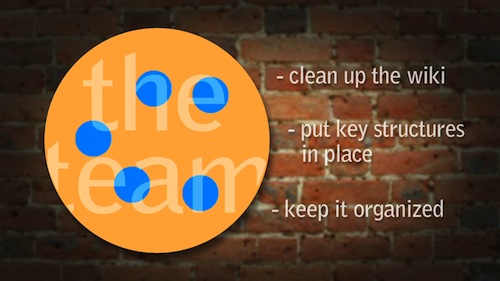

The Plan

"The great thing about both coworking and wikis is that
anyone can contribute to them. But without a vision or leadership for either, the entire operation is
weak and unsustainable. I'm all for bringing vision, leadership, and sustainability to the coworking wiki."
|
Phase 1: Project Coordination Team
We’re asking your help to fund this phase of the project –
as we organize, create structure and build the full team. Help us raise $64,000
and over the next twelve months we will develop solutions that
have time to mature into robust, sustainable systems.

Coordinators
|
|
|
Jacob Sayles
Project Coordinator |
Chelsea McClain
Operations |
Jonathan Yankovich
Directory |
Our primary goal in phase 1 is to clean up the existing content and put key
structures in place to keep everything organized. The two main components to this phase
are The Open Coworking Directory and The Wiki Team.
Open Coworking Directory – We will clean up the existing list of spaces
in a way that also supports the various new listing sites for our community. We want to
make it easy for new sites to be added, by uploading an html code to their site that will
automatically pull key info for the directory. It’s designed to be as easy to use as
Flickr slideshows or Google Analytics. We've already started working on
the prototype.
Wiki Team – [cue the montage] This is the phone-call montage scene in Ocean’s 11
where we build the star team to pull off the job. Throughout the phase 1 process we'll be reaching
out to coworking spaces that want to participate. We'll establish a superstar
team of coworking employees from around the world. And then…
Phase 2: The Wiki Team Goes to Work

Our dedicated team of superstars will be the secret sauce that give the wiki it's zing! –
Maintenance never stops, people always have questions, and more great information gets
added continuously and this team's goal is to keep it all flowing smoothly.
Coworking spaces with staff eager to be involved in the wider movement will
donate time to make this happen. We need at least 5 spaces that can contribute
approximately 5 hours per
week over the course of one full year. We need time to try things out, see what works
and try again when something doesn't stick.
They will help newcomers use the wiki effectively and feel welcome in the community.
Their passion about coworking and their perspectives from around the globe will help
lead us into the future. .
Phase 3: Into the Future!
As time goes on, individual team members can swap out with other coworking spaces wanting to contribute.
The whole system is designed to work well for years to come and have a lasting impact on the quality of the wiki.
|